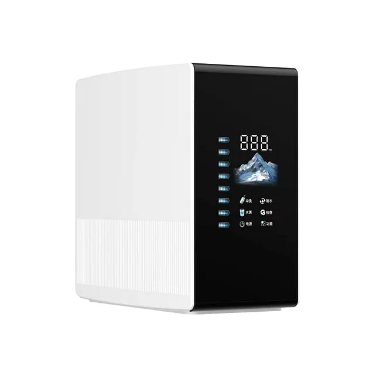
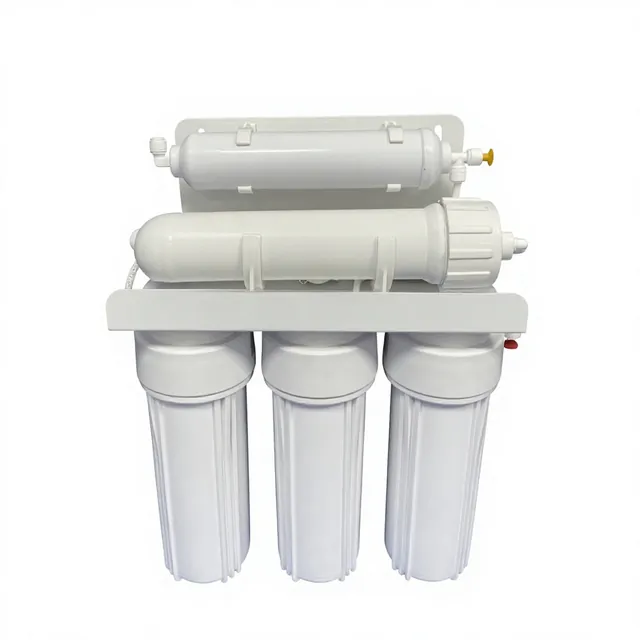
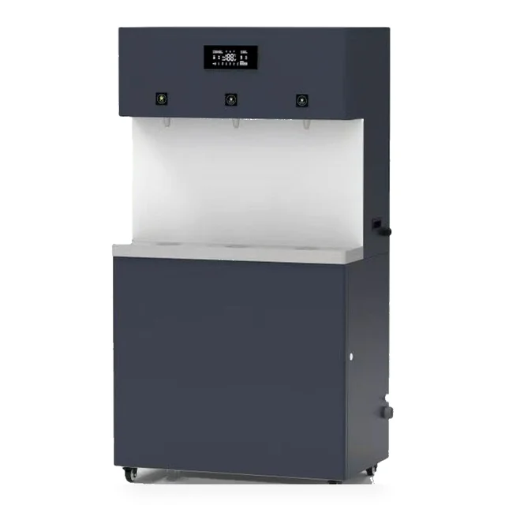

স্মার্ট RO পানি পরিশোধক 400G-1200G
আন্ডার-সিংক বা কাউন্টারটপ ব্যবহারের জন্য 400G-1200G ক্ষমতার কমপ্যাক্ট স্মার্ট RO সিস্টেম।
অনুসন্ধান পাঠানপাইকারি অর্ডারের জন্য সরাসরি কারখানা সরবরাহ, OEM/ODM কাস্টমাইজেশন, প্রত্যয়িত মান নিয়ন্ত্রণ এবং বৈশ্বিক পরিবেশকদের জন্য রপ্তানি নথি।
| ওয়াটার পিউরিফায়ার RO | পাইকারি অর্ডারের জন্য সরাসরি কারখানা সরবরাহ, OEM/ODM কাস্টমাইজেশন, প্রত্যয়িত মান নিয়ন্ত্রণ এবং বৈশ্বিক পরিবেশকদের জন্য রপ্তানি নথি। |
|---|---|
| OEM/ODM | পাইকারি অর্ডারের জন্য সরাসরি কারখানা সরবরাহ, OEM/ODM কাস্টমাইজেশন, প্রত্যয়িত মান নিয়ন্ত্রণ এবং বৈশ্বিক পরিবেশকদের জন্য রপ্তানি নথি। |
| MOQ | OEM/ODM |

আন্ডার-সিংক বা কাউন্টারটপ ব্যবহারের জন্য 400G-1200G ক্ষমতার কমপ্যাক্ট স্মার্ট RO সিস্টেম।
অনুসন্ধান পাঠান


স্থির পৌর জলচাপ দিয়ে বৈদ্যুতিক পাম্প ছাড়াই কাজ করে এবং PP, UDF/GAC, CTO, RO মেমব্রেন ও T33 স্তর একত্র করে OEM প্রকল্পের জন্য উপযুক্ত।
অনুসন্ধান পাঠান
ন্যানো-কোটেড স্টেইনলেস স্টিল বডি, এক গরম ও দুই উষ্ণ আউটলেট, হালকা-স্পর্শ বোতাম এবং ঐচ্ছিক RO ফিল্ট্রেশনসহ ফ্লোর-স্ট্যান্ডিং সরাসরি পানীয় জল ডিসপেনসার।
OEM মূল্য প্রস্তাব চান


গুণমান সংক্রান্ত নথি অনুরোধে পাওয়া যাবে · OEM/ODM